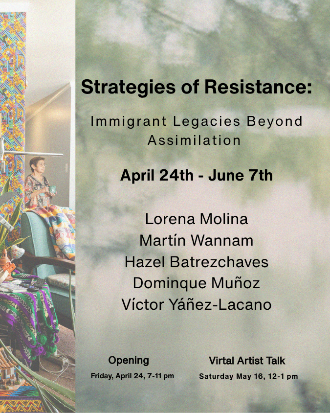

Strategies of Resistance: Immigrant Bodies Beyond Assimilation
Artist Talk: Saturday, May 16th, 12-1PM
Artists: Lorena Molina, J Molina-Garcia, Martín Wannam, Hazel Batrezchavez, Dominique Muñoz, Victor Yañez-Lazcano
Join us for the opening of our latest exhibition- “Strategies of Resistance: Immigrant Bodies Beyond Assimilation!”
In the field of migration studies, the concept of “acculturation strategies” describes the various ways in which immigrants navigate their cultural identity within a new host society. This process is often narrowly framed, with generational practices of resistance adopting strategies ranging from complete assimilation into the dominant culture to the rigid preservation of their heritage. However, this binary overlooks the nuanced and subversive tactics many immigrants and their descendants employ to resist cultural erasure and assert their rightful place in the social fabric.
This exhibition aims to focus on the political strategies used by Tesora Garcia, Lorena Molina, hazel batrezchavez, Martín Wannam, Dominique Muñoz, and Victor Yañez-Lazcano, whose many praxis mainly focuses on their identities coming from Mexico, El Salvador, and Guatemala, to challenge displacement and recenter their legacies within the United States. Through photography, sculpture, and performance, the featured artworks reveal how language, objects, gestures, and cultural practices can become tools of resistance against the homogenizing forces of the “American” mainstream.
This exhibition holds crucial significance in a political landscape marked by escalating anti-immigrant sentiment and the persistent marginalization of non-white, non-English-speaking communities. It provides a platform to elevate the voices and creative expressions of historically displaced, silenced, or those consumed by the dominant “American” culture. By centering the resistance strategies employed by Mexican, Salvadoran, and Guatemalan immigrant communities, the exhibition aims to foster a deeper understanding of the complex, multifaceted experiences of migration and identity.